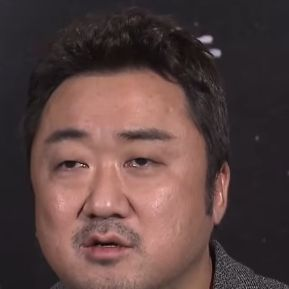

あらすじネタバレあり
あらすじを読む（結末までのネタバレを含みます）
1. 7000年前
エターナルズが地球に降り立ち、人類を怪物から守る。
2. ロンドンの怪物
現代のロンドンで、怪物が再び現れる。
3. 仲間を集める
セルシたちは、世界中に散らばった仲間を訪ねる。
4. 本当の目的
エターナルズは、自分たちが地球に送られた本当の理由を知る。
5. エマージェンス
地球を救うか、命令に従うか。仲間は2つに分かれる。
作品ガイド · 2021
映画だけでは分かりにくいところを、あらすじ・相関図・用語でやさしく解説します。
ほかのMCU作品とのつながりは少なく、10人の新しいヒーローの物語です。
古代メソポタミア、バビロン、インドなど、7000年にわたる場面が行き来します。
『エンドゲーム』で消えた人々が戻った後の世界が舞台です。
新しい人物が登場する場面が2つあります。
セルシを中心に、『エターナルズ』（2021年）に登場する人物の関係をまとめました。まわりにいるのが、地球に送られたエターナルズの仲間たちです。
※著作権の関係で、映画の場面写真やポスターなど、映画に出てくる姿の写真は使えません。顔写真はすべて、自由に使ってよい許可のある俳優本人の写真です（人間でないキャラクターはこのサイトで作ったイラスト、写真が見つからなかった人物は頭文字のアイコン）。
ドラッグで移動、ピンチ（PCはホイール）で拡大・縮小。人物をタップすると説明が開きます。

ギルガメッシュ脇役 ・ マ・ドンソクエターナルズ顔写真は、Wikimedia Commons にある俳優本人の写真（自由に使えるライセンスのもの）を、正方形に切り抜いて縮小し、使っています。人間でないキャラクターはこのサイトで作ったイラスト、写真のない人物は仮のアイコン（名前の頭文字）です。
エターナルズが地球に降り立ち、人類を怪物から守る。
現代のロンドンで、怪物が再び現れる。
セルシたちは、世界中に散らばった仲間を訪ねる。
エターナルズは、自分たちが地球に送られた本当の理由を知る。
地球を救うか、命令に従うか。仲間は2つに分かれる。
結末に関わる内容を含みます。
地球の中では、新しいセレスティアル「ティアマット」が育っていました。エターナルズは、それが生まれるのに必要な人の数が増えるまで、人類を守っていたのです。生まれるときには、地球は壊れてしまいます。
エターナルズは、アリシェムから「ディヴィアンツ以外の争いに関わってはいけない」と命じられていました。
生まれかけたセレスティアル、ティアマットです。セルシの力で石のような姿に変えられ、そのまま残りました。のちに『ブレイブ・ニュー・ワールド』では「セレスティアル島」と呼ばれています。
キンゴはインドの映画スターとして、何世代にもわたって「親子」の役で映画に出続けています。
キンゴのつき人が、スーパーマンやバットマンの名前を出して冗談を言います。
マッカリは、MCUで初めての、耳が聞こえないヒーローです。手話で話します。
ミッドクレジットでエロスとピップが登場。ポストクレジットでデイン・ホイットマンが黒い剣に手を伸ばす。